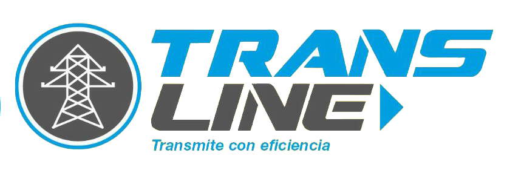

<!--
  Generated template for the MenuAdminPage page.

  See http://ionicframework.com/docs/components/#navigation for more info on
  Ionic pages and navigation.
-->
<ion-header>
  <ion-navbar>
    
    <ion-buttons end>
      <button ion-button (click)="cerrar()"> Cerrar sesion</button>

    </ion-buttons>
  </ion-navbar>

</ion-header>


<ion-content padding>
  <ion-grid>
    <ion-row justify-content-center>
    <ion-col>
      <button ion-button block outline (click)="redic('user')"> Usuarios </button>
    </ion-col>
  </ion-row>
  <ion-row justify-content-center>
    <ion-col>
      <button ion-button block outline (click)="redic('met')"> Metodos </button>
    </ion-col>
  </ion-row>
  <ion-row justify-content-center>
    <ion-col>
      <button ion-button block outline (click)="redic('res')"> Conductores </button>
    </ion-col>
  </ion-row>
</ion-grid>

</ion-content>
